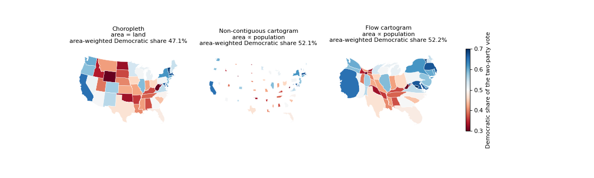
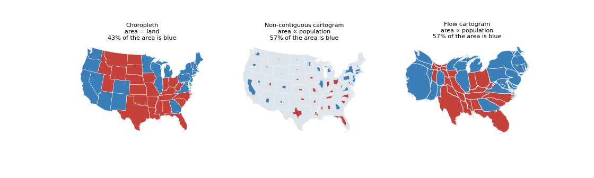

load_us_president_2020 returns the official FEC results by state (51 rows, bundled), rebuilt by scripts/download_fec_2020.py with a check of the national totals. A gallery example draws them on a choropleth, a non-contiguous and a flow cartogram. Fixes cmap={category: color} in the flow, Voronoi and non-contiguous plots.
The CSV has 51 rows (50 states and DC) and the columns state_name, state_abbr, votes_dem, votes_gop. The script downloads the workbook, sums the lines of the same state (fusion-party lines of New York and others) and checks the national totals, 81,283,501 for Biden and 74,223,975 for Trump; the file is identical to the one the talk used.
The workbook is a publication of the Federal Election Commission. Its page says that the information is produced and disseminated at U.S. taxpayer expense and states no restriction on its reuse; works of the United States government are not subject to copyright (17 U.S.C. 105), and the underlying numbers are facts. The only restriction that the FEC states is on information about individual contributors (52 U.S.C. 30111(a)(4)), which the table does not contain. Attribution to the FEC is in the docstring, the script and the example. This is a reading of the public statements, not legal advice: the license is for the maintainer to confirm before the merge.
| map | area-weighted Democratic share | area that is blue |
|---|---|---|
| choropleth (land area) | 47.1 % | 43 % |
| non-contiguous cartogram | 52.1 % | 57 % |
| flow cartogram | 52.2 % | 57 % |
| actual | 52.2 % | 57 % of the population |
| data | carto_flow.data.load_us_president_2020(), scripts/download_fec_2020.py, us_president_2020.csv (1.4 KB), the data reference page |
| example | docs/examples/plot_election_area_bias.py |
| fix | cmap={category: color} raised TypeError: unhashable type: 'dict' in the flow, Voronoi and non-contiguous plots; the shared plot_fill now turns the dictionary into colors for the categories (the others take the tab10 colors) |
| not taken from the talk | the single-panel slides and the county-level data |
Suite 1376 passed, ruff and mypy clean; the example runs in about 5 s; the docs build runs in CI.

The Democratic share of the two-party vote on the three maps; the choropleth reads 5 points too low.

The winner of each state with cmap as a dictionary of colors.